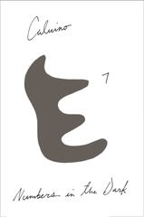

Numbers in the Dark and Other Stories
Prima che tu dica 'Pronto'
This is a mixed bag, as might be expected from stories collected over such a wide range of Calvino's life (where his other work changed so dramatically, from his realist-fiction beginnings through fable and fairy tale, postmodernism, and his cosmicomic era, for lack of a better descriptor)
Par for the course given how I've felt about the rest of his catalog, I enjoyed the back half of this collection much more than the front, earlier half. The stories that I expect to stay with me -- "World Memory," "The Burning of the Abominable House," and "Before You Say 'Hello'," among others -- are much closer to the cosmicomics than they are even to, say Difficult Loves. They swing from one extreme of scale to the other -- everyday to epic (or epochal), or the reverse in "World Memory" -- in a heady way. Even with that, though, I found the twists at the end of several more ... disappointing, maybe? Like they were attempts to inject plot into what could have been a fully complete exploration of idea or situation.